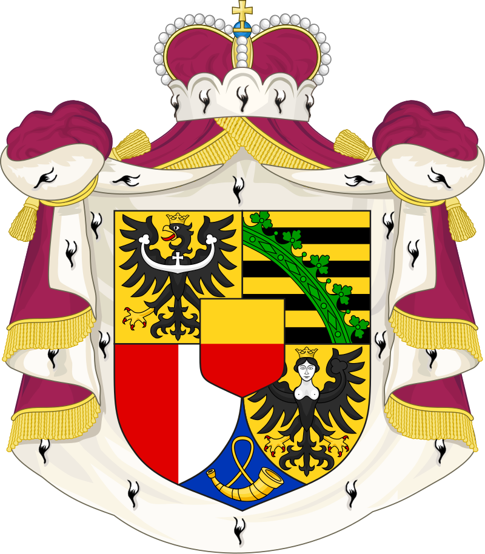
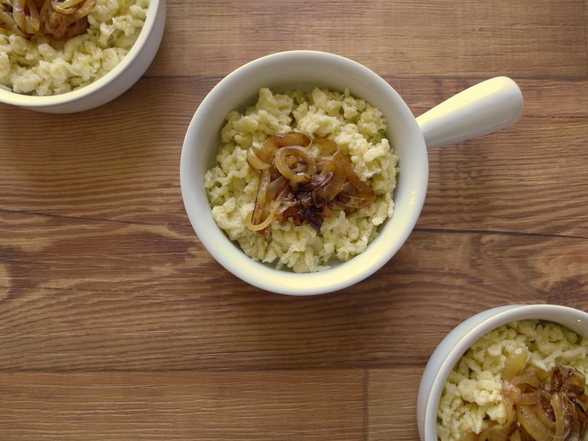

Halloumi


Traditional cheese pasta from Liechtenstein that's a different take compared to spaetzles from Austria and Germany. The dish includes flour, eggs, Gruyere cheese, and onions.
Ingredients
- Flour: 3 cups
- Eggs: 4
- Salt: 2 teaspoons
- Water: 1 cup (or more, if needed)
- Gruyere (or similar cheese), grated: 8 oz.
- Medium Onions, thinly sliced: 2
Steps
- Sift the flour into a bowl. Add salt. In another bowl, beat the eggs and 1 cup (250ml) of water.
- Add eggs to flour. Mix well to form a thick dough. If the dough is not thin enough to go through the holes in the ladle or colander, add a little water until reaching the right texture.
- Set aside for twenty minutes. Meanwhile, fry the onions in a lightly oiled pan. Stir regularly until onions are caramelized, about 15 to 20 minutes.
- Bring water to a boil in a large pot. Add a tablespoon of salt.
- When the water is boiling, push the dough through the holes of a slotted spoon or colander. The dough should fall like "thick rain" and form tiny oblong balls.
- The pasta is ready when it floats back to the surface after one to two minutes. Immediately drain the pasta in a colander.
- Put the pasta in a bowl and add the cheese. Stir so that the cheese melts.
- Serve in individual bowls and garnish with the caramelized onions.
Source: Käsknöpfle